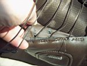
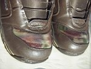
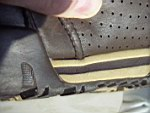
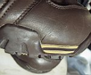

Новостя : Доскеры : Бродяги : Фотосы : Поприколу : Пиши сюда ! : ЧаВо?
|
Don`t worry, Be Happy ! Новостя : Доскеры : Бродяги : Фотосы : Поприколу : Пиши сюда ! : ЧаВо? |
Бёртон – фигня
|
По случаю внезапной кончины верных старых ботинок Nidecker Radiys встал острый вопрос о покупке новых. Они прослужили долгих четыре года. Долгая и добрая им память. Аминь. Боты были не шедевр, поэтому хотелось чего получше. Весенний выбор невелик, а в этих, на тот момент, устроило всё: жесткость как надо, сидят отлично, подошва зацепистая, шнурки не болтаются. |
Что имеем сейчас.  |
 От частой смены состояний «замёрз-оттаял» на носке ботинка от ткани начал отходить селиконополимер. Материал может и хороший, и не мнётся, и гнётся, а теперь ещё и рвётся. |
 Местами от ботинка отходит подошва. |
 Кое-где трещины. |
Случай подобного износа не гарантийный. Это чётко прописано в гарантийном талоне. Такие косяки возникли не только у меня. Подобное могут подтвердить Нестер и Артём, он же Немо, и многие другие кто носит подобные.
Все покупают боты на сезон?
Мне предоставилась честь.
Все кому по душе вредномакдональдсы, виброхарлеи, крокодилохамеры, а теперь ещё и разовобёртоны – присоединяйтесь!
А я пойду покупать ботинки. Только не «Буртон». Ни в коем разе.
Лёха Пестов. Февраль 2008